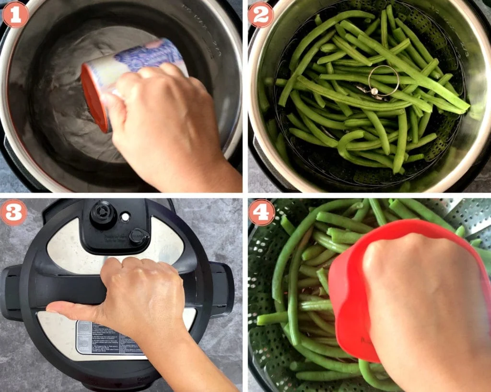

INstant-pot-Green-Beans
are a quick, easy, and healthy vegetable side dish to serve alongside a variety of weeknight meals.i am going to teach you complete guide on how to steam and then saute fresh green beans for the ultimate flavor.
We first start out by learning how to steam green beans in the instant pot and then saute them in the same pot to develop loads of flavor.
Let's get started!
Why Steam Green Beans in the Instant Pot
Steaming fresh green beans in the Instant Pot is the best way for them to turn out bright and flavorful. I love it because:
-
Perfect texture.
Setting the Instant Pot to a '0' minute cooking time results in tender yet crisp green beans every tim
-
Less mess.
No more pots and pans to worry about. All you need is the Instant Pot to steam and saute.
-
Set-it-and-forget-it.
That's the benefit to steaming just about any vegetable with an electric pressure cooker.
Ingredients - Notes & Substitutions
String beans in the Instant Pot require just a handful of fresh and pantry ingredients. We will need:
-
Green Beans:
Pick up a 1-bag of already trimmed fresh green beans from the produce section, or purchase a pound from the bulk bin and trim them once you get home.
-
Water:
The quantity of water will vary based on the size of your Instant Pot. Use 1 cup water for 6 qt, or 2 cups water for 8 qt.
Additional Ingredients for Test if you can and have it(Optional)
-
Olive Oil:
Fresh, fruity olive oil is a heart-healthy oil to sauté the green beans.
-
Seasoning:
Garlic powder, salt, and pepper create a flavorful seasoning blend to add savory notes.
-
Lemon Juice:
Fresh citrus juice gives the green beans a final pop. Lime juice is a good sub.
How to Cook Green Beans in Instant Pot
Instantpot green beans are a cinch to make. I like to first steam the greens beans, then saute them for additional flavor. Here's how to do it:
Step 1: Steam Green Beans
Add water to the Instant Pot cooking pot (Pic 1). Place the washed and trimmed green beans on the steamer basket. Place the steamer basket in the Instant Pot (Pic 2).
Close the lid (Pic 3). Press 'Steam' or 'Pressure Cook' for '0' mins. When the cooking time is done, manually release the pressure (QR), remove the beans, and discard the water (Pic 4).
Step 2:Saute Beans
Wipe the pot clean. Turn on Saute and add olive oil. When the oil is hot, add steamed green beans, garlic powder, salt, and pepper, and saute for 2 minutes.
Cancel Saute and transfer the beans to a serving platter.
Squeeze fresh lemon juice over them. Optionally, sprinkle red pepper flakes and more black pepper if you like. Enjoy them warm with your favorite entrée.

Recipe Tips & Notes:
-
Unse fresh green beans:
Fresh beans retain a nice crispness even after sauteing, which is hard to replicate in frozen beans.
-
Garlic:
Swap out the garlic powder for 1-2 cloves of fresh garlic instead.
-
To reheat green beans,
Swap out the garlic powder for 1-2 cloves of fresh garlic instead.
NOw you can sit-down on sofa and eat you green beans